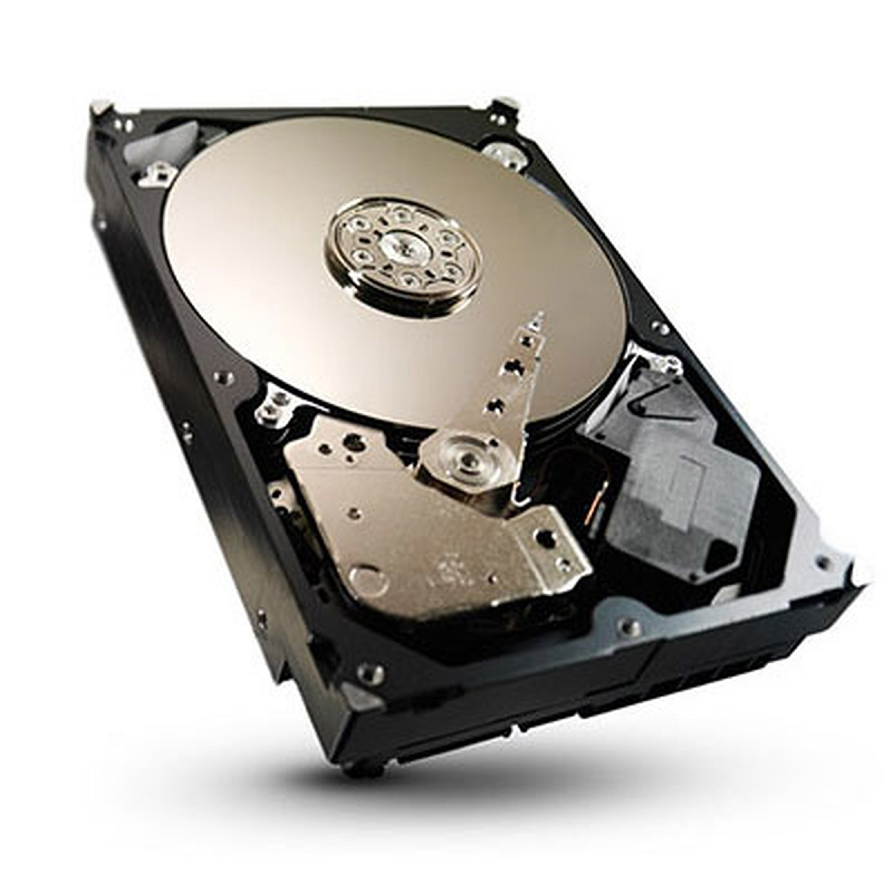
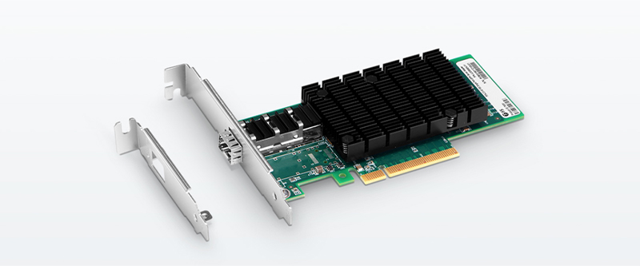
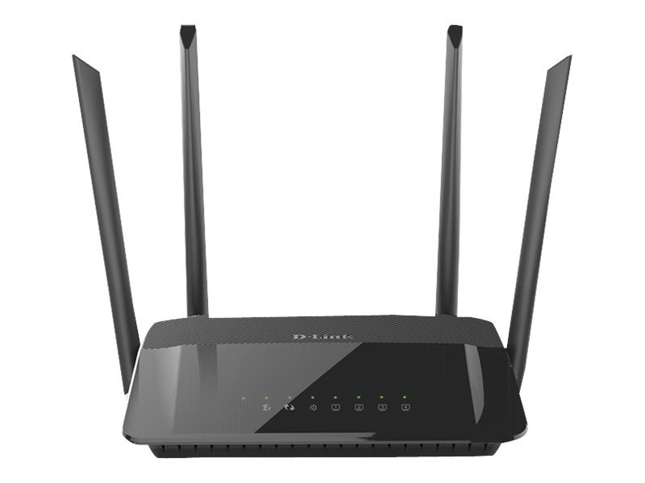

Scenario 5
The user wants to upload a picture of the item they’re selling. How does this work, starting from their hard drive
and then being sent to the application’s server?
- The hard drive stores the data files through spinning platters, which are made up of magnetic material
that allows the computer to read, erase and write data. The files contain information including the color pixels
of the picture as well as codes for characters of text files.

- The heads of the hard drive read the data that is spread out on the magnetic layer of the disk platter. The
platter is divided into billions of tiny areas or units of space that are independently magnetized (1) or
demagnetized (0) to store binary code. The use of magnetism in computer storage is important as it continues
storing that information after the power is switched off. The hard drive also has another important aspect to it
called the cache buffer which increases the speed and efficiency of data between the drive and the computer. The
cache holds frequently used data so it is not needed to get the information from the magnetic disk every time.
- Before the hard drive can transfer the data to the computer device, the computer has to startup. Once a computer
is connected to a power source, like an outlet, the power supply unit (PSU) provides the power to
the entirety of the computer. It takes the AC from the wall outlet or
another power source to convert it into low-voltage regulated DC power for the
internal components.
- The PSU has a transformer, which changes the input voltage to the necessary outgoing voltage.
- Then the rectifier converts the incoming power from AC to DC.
- The filter relatively evens out the DC waves when it is converted.
- Lastly, the regulator in the PSU completely smoothes out any ripples left by the filter and prevents any voltage
surges or drops.
- When the computer is starting up and the PSU starts to supply the PC the power it needs to function properly,
the ROM opens up the computer’s BIOS and firmware that start up the computer. It is a type of
non-volatile memory from which the user can only read and not write/make any changes to it. It is located on the
motherboard and is part of the BIOS chip. It also stores information and operates fundamental things, like
the screen & keyboard systems.
- ROM chips are made up of grids of OR gates using diodes. The ROM uses address input to select a memory location
in the chip that contains the wanted content.
- Then the diodes will take the decoder’s output as its input to produce its own output, which starts the computer
and other software.
- Once the computer is booted up, the computer has to pull up the image from the hard drive. The Northbridge of
the motherboard communicates with and connects the hard drive and video card directly through the circuit using
data buses or through cables. The motherboard is the primary piece of the computer, as it is the circuit board
that connects all the computer’s components for them to be able to interact with each other, including the CPU and
memory.
- There are two areas in the motherboard that are needed for information travel: the northbridge and
southbridge. The Northbridge manages, connects, and communicates with the CPU, RAM and various video
processors. The front side bus in the motherboard the Southbridge allows for communication with other devices.
- To open and display the image, the graphics card is used. A graphics card uses 4 main components: a
motherboard, a GPU, VRAM, and a monitor or other output interfaces. The graphics
processor unit (GPU) performs complicated mathematical and geometric calculations needed to the produce the
graphics, which uses an enormous amount of transistors—sometimes even more than the typical CPU. It is located
under a heat sink which increases heat flow away from the device through a series of fins.
- The VRAM of the graphics card is both read from and writen to simultaneously as it is dual ported, making it
operate at high speeds. It is used by the GPU to store information about each pixel, its color, and its placement
on the screen as it forms images.
- Then the RAMDAC (random access memory digital-to-analog converter), a microchip, converts digital image
data into analog data that the computer can use to display the image. It also stores the color palette that is
needed to generate the image. A cable is then used to transmit the data to the monitor.
- A cable is then used to transmit the data to the monitor from where the user uses software and the web to send a
request to upload to the application’s server.
- The RAM stores data access that needs to be instantly accessed, which includes the opening of
applications, internet browsing, and more. It is volatile, meaning the memory erases without power. The higher the
speed the RAM has, the better the performance.
- It allows for the PC/application that opens the image to input its core files upon startup. The RAM is made up
of electrical capacitors, which store the binary code using transistors to charge or discharge the capacitor.
- Data is retrieved from the RAM by the CPU chip. The purpose of a Central Processing Unit is to process
data, from performing calculations to sending instructions to other computer components, it does various basic
computer functions.
- The CPU receives electrical pulses from a timing circuit known as a clock, which regulates CPU activity. The
clock can run at rates between hundreds of thousands and billions of cycles per second, depending on the
processor.
- Then the ALU performs bitwise and mathematical operations that the
control unit tells it to do. The chip starts to move and process the data via the motherboard in the proper
sequence to its next intended location. The control unit also coordinates other activities in the CPU. It breaks
down the received instructions into sets of actions for subsystems in the CPU to carry out. The CPU has a memory
management unit, which has a quick but limited amount of memory. It has a set of storage areas called registers,
which the ALU directly acts upon. Additionally, the CPU maintains previously used instructions and data in an area
known as a cache to increase the computer's performance.
- The CPU uses a memory address from the RAM for data tracking, referencing a certain location in the software and
hardware. The CPU sends the information to the NIC.
- The NIC helps the computer communicate with the other
computers in the network and connects it to the internet. The NIC port allows for electronic signals to be
generated and received from the transceiver or Ethernet cable.

- The controller in the NIC processes the received data and is a core part of the network adapter as it directly
affects its performance.
- The bus interface serves as the connection between the NIC and the computer/server through expansion slots and
transfers the information to the router.
- It directs and routes data between devices in a LAN and WAN, acting as a gateway between networks. The router transfers data packets
from the computer to the modem.

- The modem connects your home devices to your ISP by
taking analog signals from your ISP and converting it into digital signals that can be understood by the local
home devices and vice versa. Its name is an abbreviation of modulator (encoding information into a signal) and
demodulator (extracting information from the signal), which describes its function. A modem has 2 plugs, one
connecting to the ISP and another connecting to the WIFI router.
- The modem will send the information to find the correct server, which would also be connected to the internet
through a router.
- The data packet will reach the router at the application’s server and upload the picture of the item that the
user is selling.
Citations (ALM)
Chris Woodford. Last updated: November 9. “How Does a Hard Drive Work?” Explain That Stuff, 9 Nov. 2021,
https://www.explainthatstuff.com/harddrive.html.
“Computer and Device Defense - How Computers Work - The Carnegie Cyber Academy.” Computer and Device
Defense - How Computers Work - The Carnegie Cyber Academy - An Online Safety Site and Games for Kids,
http://www.carnegiecyberacademy.com/facultyPages/computer/computers.html#:~:text=The%20electrical%20circuits%20on%20the,them%20with%20cards%20or%20cables.
“Computer Memory.” Encyclopædia Britannica, Encyclopædia Britannica, Inc.,
https://www.britannica.com/technology/computer-memory#ref93698.
Contributor. “How Does a Memory Cache Speed up Computer Processing?” It Still Works, 13 Dec. 2019, https://itstillworks.com/cache-speed-up-computer-processing-5004701.html.
Ellis, Justin. “What Is a Router and How Does It Work?” Latest Blog Posts Comms Express, 1 Jan. 1970, https://www.comms-express.com/blog/what-is-a-router-and-how-does-it-work/#:~:text=A%20router%20takes%20data%20packets,the%20device%20that%20requested%20it.
Papiewski, John. “How Does a CPU Processor Work?” Small Business - Chron.com, Chron.com, 26 Oct. 2016, https://smallbusiness.chron.com/cpu-processor-work-65451.html.
Rubens, Paul. “What Is Ram?: How Does Ram Work?” Enterprise Storage Forum, 23 Feb. 2021, https://www.enterprisestorageforum.com/hardware/ram/.
Tyson, Jeff, et al. “How Graphics Cards Work.” HowStuffWorks, HowStuffWorks, 16 Mar. 2001, https://computer.howstuffworks.com/graphics-card.htm.
“What Is a Modem and What Does It Do?” Science ABC, 8 July 2022, https://www.scienceabc.com/innovation/what-is-a-modem-what-does-it-do-router-working.html.
“What Is a Power Supply & How Does It Work?: Act.” Advanced Conversion Technology, 15 Sept. 2022, https://www.actpower.com/educational/what-is-a-power-supply-and-how-does-it-work/.
“What Is Hard Disk Cache and Why Is It Important.” Dignited, 12 Sept. 2022, https://www.dignited.com/56059/hard-disk-cache/.
“What Is Network Interface Card: Purposes, Functions & Types: FS Community.” Knowledge, https://community.fs.com/blog/nic-card-guide-for-beginners-functions-types-and-selection-tips.html.